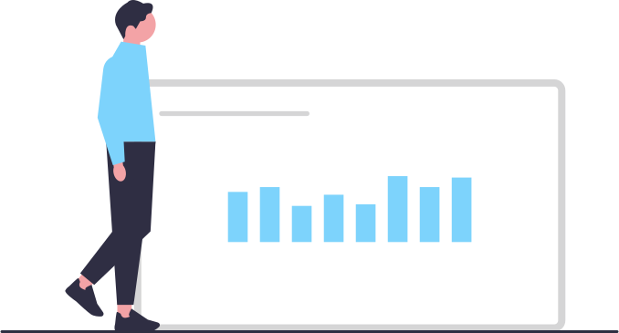

Gerencie suas tarefas pessoais e profissionais facilmente
O sucesso começa com uma agenda bem organizada! A rotina das pessoas está mais complexa e não dá pra lembrar de tudo. O Tarefas existe para te ajudar com suas listas de tarefas e compromissos. Registre o que é importante e seja lembrado no momento necessário. Não conseguiu cumprir? Tudo bem! Reagende tarefas em lote com o arrastar e soltar. Quer ver tudo o que tem para fazer na semana? Sem problemas, liste todas as suas tarefas com um clique. Tudo isso e muito mais simples assim com o Tarefas!
